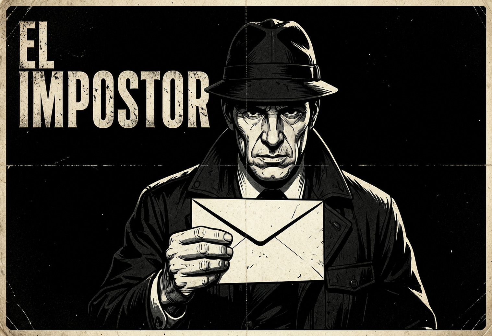

Engaña, investiga y vota antes de que el impostor gane.

Desde 3 hasta 50 jugadores. El juego escala perfectamente para grupos pequeños de amigos o grandes fiestas.
Sí, la web está diseñada para funcionar perfectamente en móviles, tablets y ordenadores.
Sí, puedes configurar el número de impostores antes de empezar la partida. Para grupos grandes recomendamos 2-3 impostores.
No, el juego es completamente gratuito y sin registro. Solo entra y crea tu partida en segundos.
Crea una partida en segundos. Sin registro. Gratis para siempre.
⚡ Empezar a jugar